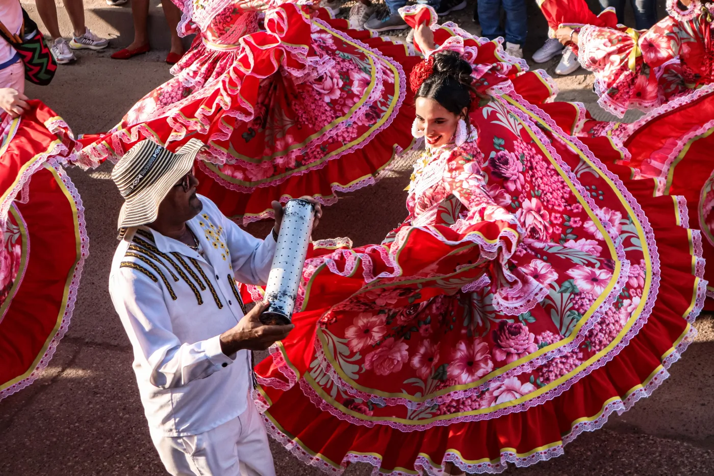
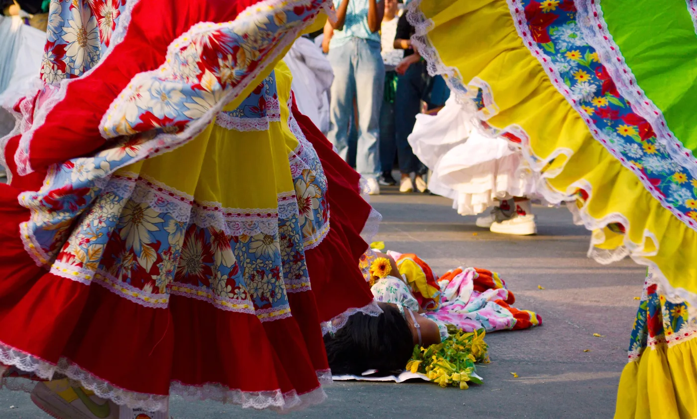

La música del Caribe colombiano nació del encuentro de tradiciones africanas, indígenas y españolas en la costa. La cumbia y el bullerengue son dos de los ritmos que llevamos al escenario. Esto es de dónde vienen.
La cumbia es el ritmo más conocido de Colombia. Nació en la costa Caribe, donde se juntaron los tambores africanos, las flautas indígenas (gaita colombiana, caña de millo) y el canto español, y durante el siglo XX se extendió por toda América Latina. Cada país hizo su versión: cumbia villera en Argentina, cumbia norteña en México, otras en Perú y Venezuela. Los tambores del centro siguieron siendo los mismos.
 Los Gaiteros de San Jacinto · "Fuego de Cumbia"
Los Gaiteros de San Jacinto · "Fuego de Cumbia"

© María Molina / Pexels · Juan de Acosta, Atlántico
El bullerengue nació en los palenques de Bolívar, Córdoba y Sucre, comunidades fundadas por personas que escaparon de la esclavitud. Es ante todo un canto de mujeres, que ha pasado de voz en voz por generaciones. Tiene tres "aires" o estilos:
El más lento de los tres, cantado sentado, con frases largas y melancólicas.
 Tonada · "Sin ti no puedo vivir"
Tonada · "Sin ti no puedo vivir"
Más rápido, lleno de leleos (cantos onomatopéyicos), hecho para celebrar.
 Darlina Saenz · "Dinastia Bullerenguera"
Darlina Saenz · "Dinastia Bullerenguera"
Alegre, en ritmo binario, versos cortos y baile suelto.
 Ceferina Banquez · "Juanita Tu Estás Preñá"
Ceferina Banquez · "Juanita Tu Estás Preñá"
 Ver los tres aires: Etelvina Maldonado & Encarnación Tovar, Cartagena 1997
Ver los tres aires: Etelvina Maldonado & Encarnación Tovar, Cartagena 1997
Cantadoras como Totó la Momposina, Petrona Martínez (Grammy Latino 2021 al Mejor Álbum Folclórico) y Etelvina Maldonado llevaron el bullerengue de los patios de María la Baja y Puerto Escondido a escenarios de todo el mundo.

© Jessica Cardona Bijalba, 2023
Somos una banda colombiana en Berlín. Empezamos tocando ritmos tradicionales para grupos de baile folclórico, y todavía trabajamos con grupos de teatro y danza. Nuestro formato tradicional es de tambores y voces: alegre, tambora, llamador, maracas, gaita y canto. La banda completa suma bajo, guitarra y e-drums.
En el set: cumbia, bullerengue, puya, mapalé y porro, y algo de champeta cuando el público lo pide.
¿Buscas una banda colombiana en Berlín o en otra ciudad de Europa para un festival, una boda o un evento privado? Escríbenos a palosantomusicberlin@gmail.com.
El bullerengue es una tradición afrocolombiana de canto y baile de la costa Caribe de Colombia, cantada primero por mujeres en los palenques, comunidades fundadas por personas que escaparon de la esclavitud. Tiene tres estilos o "aires": bullerengue sentao, fandango de lengua y chalupa.
En la costa Caribe de Colombia, donde se encontraron tradiciones musicales africanas, indígenas y españolas durante la época colonial. De ahí se extendió por toda América Latina.
En el formato tradicional: alegre, tambora, llamador, maracas, gaita y voces. La banda completa suma bajo, guitarra y e-drums.
Sí. Tocamos en festivales, clubes, eventos culturales, bodas y eventos privados en Berlín y en toda Europa. Escríbenos a palosantomusicberlin@gmail.com.
Disponibles para festivales, clubes, eventos culturales y contrataciones privadas en toda Europa.
Escríbenos